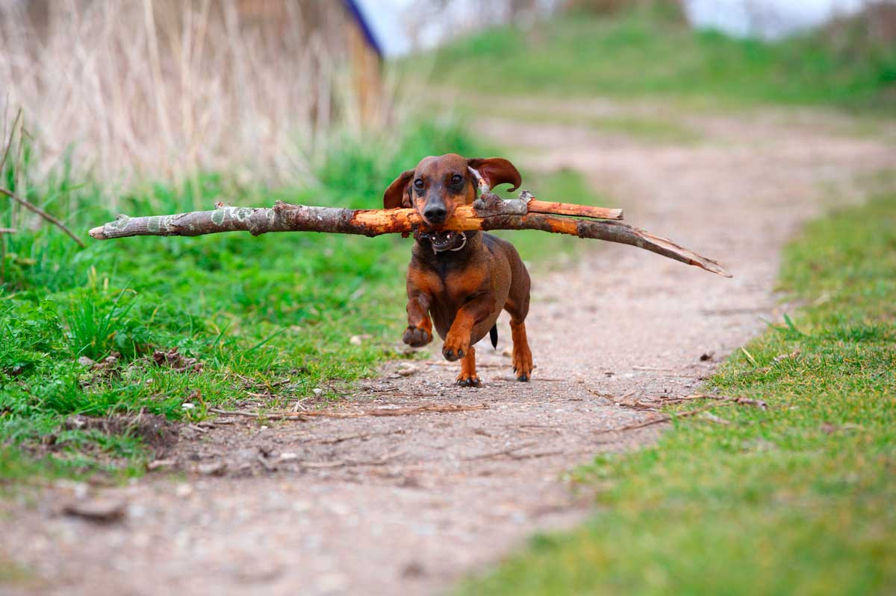

bienvenido a mi pagina de salchichas
Esta es mi aplicacion donde les voy a mostrales diferentes razas de salchichas.
Salchicha Pelo Corto Marron
El pelo debe ser corto, espeso, brillante, liso, bien pegado al cuerpo, fuerte y duro; no debe mostrar zonas sin pelo. La cola con pelo fino y tupido
Salchicha Pelon Largo
El pelaje está provisto de una capa externa de pelo liso, brillante y bien pegado al cuerpo, se alarga debajo del cuello y en la parte inferior del cuerpo, sobresale en las orejas y presenta en la parte posterior de las extremidades un pelo claramente más largo en forma de plumas. El pelo más largo se encuentra en la parte inferior de la cola, donde forma bandera.
Salchicha Pelo Duro
Con excepción del hocico, las cejas y las orejas, tiene en todo el cuerpo - mezclado con la capa interna de pelo - una capa externa con el pelo pegado al cuerpo, espeso, áspero y grueso. En el hocico posee una barba bien marcada. Las cejas son tupidas. En las orejas, el pelo es más corto que en el cuerpo, casi liso. La cola con pelo bien desarrollado, uniforme y muy pegado.